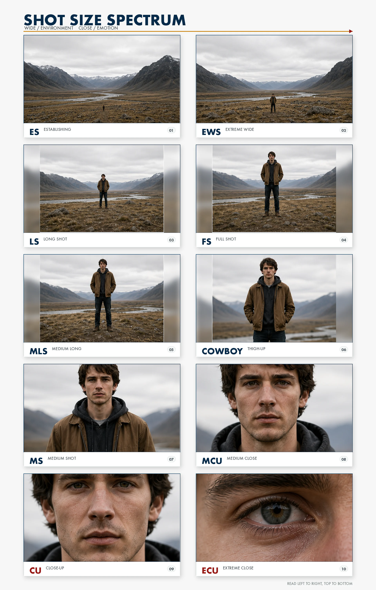
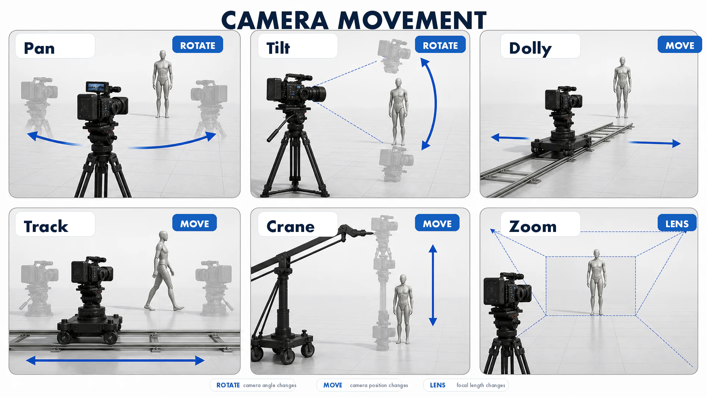
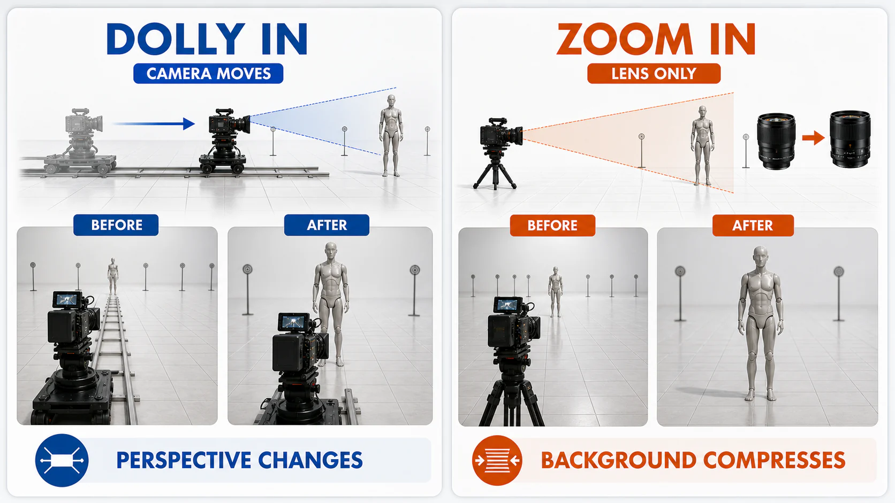
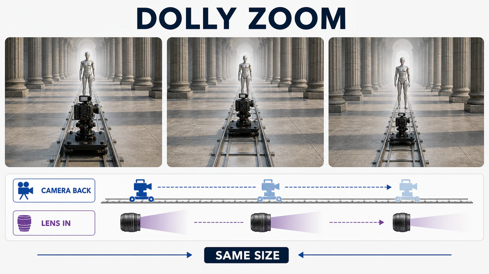

7주차 1교시 — 중간고사 안내와 시네마틱 카메라 이론 (학생용)
관련 문서
| 관계 | 문서 |
|---|---|
| 강의 계획서 | 강의계획서: Game Engine II |
| 강의 아웃라인 | 7주차 아웃라인 |
- 중간고사 제출 구조와 평가 기준을 이해할 수 있다
- 샷 사이즈와 카메라 무빙의 종류를 설명할 수 있다
- 연출 의도에 맞는 샷과 무빙을 선택할 수 있다
1교시 — 중간고사 안내 + 시네마틱 카메라 이론
중간고사 가이드라인 안내
제출물은 두 가지입니다. 하나는 스토리보드 6컷 이상, 하나는 컨셉 문서 A4 한 장입니다. 하나의 PDF로 합쳐서 제출하면 됩니다.
스토리보드는 기말에 만들 시네마틱 영상의 설계도입니다. 각 컷에는 샷 사이즈, 카메라 움직임, 상황 설명이 들어가야 합니다.
스토리텔링 30%, 샷 구성 25%, 카메라 워크 25%, 완성도 20%
그림을 잘 그리느냐는 채점 기준에 없습니다. 중요한 것은 어떤 장면을 어떤 카메라로 찍겠다는 기획력입니다. 그림이 정교하지 않아도 의도가 명확하면 좋은 점수를 받을 수 있습니다. UE5 스크린샷을 활용해도 됩니다.
오늘 1~2교시에서 관련 용어들을 배우고, 3교시에 직접 초안을 만들어봅니다. 오늘 수업을 따라오면 중간고사 초안의 큰 틀을 잡을 수 있습니다.
도입
영화에서 같은 대화 장면인데 어떤 영화는 긴장감이 넘치고 어떤 영화는 평면적으로 느껴지는 경우가 있습니다. 그 차이의 절반은 카메라입니다. 얼마나 가까이 찍느냐, 카메라가 어떻게 움직이느냐에 따라 달라집니다.
예를 들어 Silence of the Lambs에서 한니발 렉터가 클라리스와 대화하는 장면에서는 카메라가 얼굴을 꽉 채우면서 관객을 정면으로 바라봅니다. 그것 하나만으로도 강한 긴장감을 만드는 것이 샷 사이즈의 힘입니다.
샷 사이즈와 카메라 무빙
핵심 개념 1: 샷 사이즈
샷 사이즈란?
샷 사이즈는 화면에 피사체가 얼마나 크게 잡히느냐입니다. 멀리서 찍으면 와이드, 가까이 찍으면 클로즈업입니다.
영화에서는 이것을 약어로 씁니다. 스토리보드에도, 촬영 리스트에도 이 약어가 들어갑니다. 이 약어를 익히면 프로 스토리보드를 읽을 수 있게 됩니다.

넓은 샷일수록 환경을 보여주고, 좁은 샷일수록 감정을 보여줍니다.
영상: 먼저 3분짜리 개요 영상으로 전체 그림을 잡아보겠습니다.
10가지 샷 사이즈 정리
그룹 1: 넓은 샷 — 공간을 보여준다
1. Establishing Shot (ES) — 장소와 시간 설정
영화의 맨 첫 컷, 또는 장면이 바뀔 때 나오는 샷입니다. '자, 여기가 배경입니다'라고 알려주는 역할을 합니다.
Blade Runner 2049 오프닝에서는 광활한 황폐화된 LA 상공이 보이고, 거대한 태양광 패널 농장과 도시 스카이라인이 한 프레임에 담깁니다. 대사 한 마디 없이 이 세계가 디스토피아라는 것을 관객이 즉시 알아챕니다.
The Shining 오프닝에서는 헬리콥터가 산길을 따라가는데, 작은 차 한 대가 끝없는 숲과 산 사이를 올라갑니다. 이것만으로 '이 사람들이 문명에서 완전히 격리된다'는 것을 보여줍니다. 고립감과 불안함이 전달됩니다.
시네마틱을 만들 때, 첫 번째 컷은 ES로 시작하면 장소와 분위기를 안정적으로 전달할 수 있습니다.
2. Extreme Wide Shot (EWS) — 환경 속 극히 작은 인물
ES보다 더 넓은 샷입니다. 인물이 보이긴 하지만 점처럼 작습니다. 자연이나 환경이 얼마나 거대한지를 보여줄 때 사용됩니다.
Lawrence of Arabia에서는 화면 전체가 사막의 수평선이고, 로렌스는 작은 점에 불과합니다. 이 한 장면으로 '자연 앞에서 인간이 얼마나 작은가'를 보여줍니다. 동시에 이 사막을 건너야 한다는 모험의 웅장함도 전달됩니다.
Mad Max: Fury Road에서는 끝없는 오렌지빛 사막 위로 차량 행렬이 먼지를 일으키며 달립니다. 도망칠 곳이 없다는 절박함을 공간의 광활함으로 표현하는 것입니다.
3. Long Shot / Wide Shot (LS/WS) — 인물 전체 + 주변 환경
인물의 전신이 보이면서 주변 환경도 함께 잡히는 샷입니다. EWS보다는 인물이 크게 보입니다.
Singin' in the Rain에서 진 켈리가 빗속에서 춤추는 장면에서는 전신이 보여야 춤 동작의 전체 안무가 보입니다. 가로등, 빗줄기, 웅덩이까지 함께 보여서 '비 오는 거리에서 춤춘다'는 상황이 한 프레임에 다 들어옵니다.
그룹 2: 중간 샷 — 인물과 행동을 보여준다
4. Full Shot (FS) — 머리부터 발끝
인물의 전신이 화면에 꽉 차는 샷입니다. LS와 비슷하지만, 배경보다 인물에 초점이 맞습니다. 특히 복장이나 자세가 중요한 캐릭터에게 사용됩니다.
[!example]- 영상: Devil Wears Prada — Gird Your Loins · 시간 00:30~01:15
The Dark Knight에서 조커가 은행 로비에 처음 서는 장면에서는 보라색 양복, 그린 머리카락, 기울어진 자세가 모두 보입니다. 전신이 다 보여야 '이 캐릭터가 어떤 인물인지'를 의상만으로 각인시킬 수 있습니다.
Devil Wears Prada에서 메릴 스트립이 엘리베이터에서 내리는 장면도 마찬가지입니다. 모피 코트, 하이힐, 선글라스 등 의상 자체가 캐릭터의 권위를 말해줍니다.
5. Medium Long Shot (MLS) — 무릎 위
인물을 무릎 위부터 잡는 샷입니다. 전신보다는 감정에 조금 더 가까이 가고, MS보다는 몸의 자세와 주변 공간을 더 많이 보여줍니다. 인물이 걸어오거나 주변을 탐색하는 장면에 적합합니다.
6. Cowboy Shot — 허벅지 중간
서부극에서 건맨의 허리춤 총집을 보여주려고 이 높이에서 잘랐기 때문에 카우보이라는 이름이 붙었습니다. 서부극에만 쓰이는 것은 아닙니다.
[!example]- 영상: No Country for Old Men — Coin Toss · 시간 01:00~02:30
Kill Bill에서 브라이드가 복도에 서 있는 장면에서는 허벅지 위부터 잡히고 한 손에 칼이 보입니다. 서부극의 결투 긴장감을 사무라이 액션에 차용한 것입니다.
No Country for Old Men 주유소 장면에서는 시거가 카운터 앞에 서 있는데, 허벅지 위부터 잡혀서 위압적 체구와 손에 든 동전이 함께 보입니다. 무기를 직접 보여주지 않는데도 위협감이 전달됩니다.
7. Medium Shot (MS) — 허리/가슴 위
영화에서 가장 많이 쓰이는 샷입니다. 대화 장면의 기본입니다.
[!example]- 영상: The Social Network — Cease and Desist · 시간 00:30~01:30
Pulp Fiction 다이너 장면에서 빈센트와 줄스가 테이블에 앉아 대화할 때 허리 위가 잡힙니다. 손동작과 표정이 자연스럽게 보이면서도 주변 환경이 살짝 나옵니다. 가장 중립적인 거리입니다.
The Social Network 법정 장면에서 저커버그가 변호사와 대화할 때 가슴 위가 잡힙니다. 팔짱을 끼거나 몸을 기울이는 태도가 보여서, 대사 없이도 '이 사람이 지금 어떤 태도인지'를 알 수 있습니다.
8. Medium Close-Up (MCU) — 어깨 위
MS보다 약간 더 가까운 샷입니다. 표정의 미세한 변화가 중요할 때 사용됩니다.
Gone Girl에서 에이미가 TV 인터뷰하는 장면에서는 어깨 위부터 얼굴이 잡히는데, 미소에서 차가운 눈빛으로 바뀌는 미세한 변화가 보입니다. 관객이 '이 사람이 거짓말하고 있다'는 것을 표정으로 읽게 됩니다.
그룹 3: 가까운 샷 — 감정과 디테일을 보여준다
9. Close-Up (CU) — 얼굴 전체
CU는 감정을 전달하는 샷입니다. 인물이 무슨 생각을 하는지, 어떤 기분인지를 카메라로 직접 말하는 것입니다.
Schindler's List에서 쉰들러가 유대인들에게 반지를 받는 장면에서는 쉰들러의 눈에 눈물이 고이는 모습이 얼굴 전체로 잡힙니다. 대사 없이 얼굴만으로 죄책감과 슬픔이 전달됩니다.
Silence of the Lambs에서 한니발 렉터의 얼굴이 유리 너머로 클로즈업되면서 관객을 정면으로 응시합니다. 거의 제4의 벽을 깨는 것 같은 효과로, 공포와 묘한 친밀함이 동시에 만들어집니다.
10. Extreme Close-Up (ECU) — 눈, 입, 손 등 일부
ECU는 가장 강력한 샷입니다. 너무 가까이 찍기 때문에 관객이 불편해집니다. 그래서 극단적인 감정에만 사용됩니다.
[!example]- 영상: Se7en — Main Title Sequence · 시간 00:00~02:00
Requiem for a Dream에서 약물 투여 직후 동공이 급격히 확대되는 눈만 화면에 가득 찹니다. 신체적 변화를 극단적으로 확대해서 중독의 공포를 시각화하는 것입니다.
Se7en에서 손가락 끝의 지문, 범인의 글씨가 화면 전체를 채웁니다. 관객이 탐정의 시선으로 빨려 들어가는 느낌입니다. 디테일 자체가 서사가 되는 것입니다.
보통 ES나 EWS로 공간을 먼저 넓게 보여주고, 그다음에 FS나 MS로 인물을 보여주고, 마지막에 CU로 인물의 표정을 잡습니다. 넓은 데서 좁은 데로 가는 것이 기본 패턴입니다.
핵심 개념 2: 카메라 무빙 6종
카메라 무빙이란?
샷 사이즈가 '얼마나 가까이 찍느냐'였다면, 카메라 무빙은 '카메라가 어떻게 움직이느냐'입니다.
카메라가 가만히 있으면 사진이고, 움직이면 영화가 됩니다. 그런데 임의로 움직이면 안 되고 정해진 규칙이 있습니다. 크게 6가지입니다.
6가지 카메라 무빙

영상: 4분짜리 개요 영상으로 카메라 무빙 전체를 한 번에 훑어봅니다.
1. Pan (패닝) — 카메라 제자리, 좌우 회전
카메라는 삼각대에 고정되어 있고, 고개만 좌우로 돌리는 것입니다. 사람이 고개를 돌려서 주변을 둘러보는 느낌입니다.
The Shining에서 오버룩 호텔 로비를 천천히 패닝하는 장면이 유명합니다. 공간이 넓다는 것을 보여주면서 동시에 어떤 요소 불안한 느낌을 줍니다.
The Revenant 전투 장면에서는 카메라가 강가에서 수평으로 천천히 회전하면서 원주민 공격이 사방에서 벌어지는 것을 드러냅니다. 컷 없이 공간 전체를 보여주기 때문에 포위당한 혼돈이 체감됩니다.
- 연출 의도: 공간을 드러내거나, 반전을 만들 때
- 스토리보드 표기: 수평 화살표 (← →)
2. Tilt (틸트) — 카메라 제자리, 상하 회전
Pan이 좌우라면, Tilt는 위아래입니다. 건물을 아래에서 위로 올려다보거나, 하늘에서 땅으로 내려다봅니다.
Lord of the Rings에서 사루만의 탑 이센가드 장면에서는 카메라가 땅에서 위로 틸트하면서 탑 꼭대기까지 올라갑니다. 수직적 움직임으로 '이 권력이 얼마나 큰지'를 물리적으로 느끼게 합니다.
Harry Potter 첫 편에서 해리가 대강당에 처음 들어갈 때 테이블에서 위로 틸트하면 수천 개의 촛불이 떠 있는 천장이 드러납니다. 해리가 마법 세계의 규모에 압도되는 경험을 관객도 같이 하게 됩니다.
- 연출 의도: 스케일, 권위, 경외감 표현
- 스토리보드 표기: 수직 화살표 (↑ ↓)
3. Dolly (달리) — 카메라 앞뒤 이동
카메라 자체가 앞뒤로 움직이는 것입니다. 원래는 레일 위에 카메라를 올려놓고 밀거나 당기는 것인데, 요즘은 스테디캠이나 짐벌로도 합니다.
Dolly In은 인물에게 다가가면서 긴장감을 높이고, Dolly Out은 물러나면서 상황을 넓게 보여줍니다.
E.T.에서 엘리엇이 이별하는 장면에서는 카메라가 레일 위에서 엘리엇에게 천천히 다가갑니다. 관객이 물리적으로 캐릭터 곁에 가는 듯한 느낌이 듭니다. 줌으로 당기는 것과는 확실히 다릅니다. 원근감이 자연스럽게 바뀌면서 물리적으로 접근하는 감각이 만들어집니다.
The Shining 복도 세발자전거 장면에서는 카메라가 대니의 세발자전거 뒤에서 쫓아가는데 복도 끝이 안 보입니다. 아이의 시점에 관객을 묶어놓고, 무엇이 나타날지 모르는 불안을 유지하는 것입니다.
- 연출 의도: 감정적 거리 조절 (다가감/물러남)
- 스토리보드 표기: 카메라에서 피사체 방향 화살표
4. Track (트래킹) — 카메라 좌우 이동
Dolly가 앞뒤라면, Track은 좌우입니다. 카메라가 옆으로 움직이면서 인물을 따라가거나, 공간을 훑습니다.
Goodfellas의 코파카바나 나이트클럽 입장 장면에서는 헨리와 카렌이 레스토랑 뒷문으로 들어가서 주방을 거쳐 VIP석까지 이동하는데, 카메라가 옆에서 나란히 쭉 따라갑니다. 3분 동안 컷 없이 진행됩니다. 이 한 장면으로 '헨리가 이 세계에서 얼마나 특권을 누리는지'를 보여주는 것입니다.
올드보이 복도 격투 장면에서는 카메라가 옆에서 수평 트래킹하면서 오대수가 다수와 싸우는 것을 횡스크롤 게임처럼 보여줍니다. 컷 없이 계속 따라가기 때문에 격투의 지속적인 고통과 피로가 실시간으로 느껴집니다.
- 연출 의도: 인물 동행, 공간의 연속성
- 스토리보드 표기: 카메라 아래 좌우 화살표
5. Crane (크레인) — 카메라 상하 이동
카메라가 물리적으로 위아래로 올라가거나 내려가는 것입니다. 드론이 보편화되기 전에는 실제 크레인에 카메라를 장착했습니다. UE5에서는 카메라 액터 Z축 키프레임으로 구현합니다.
Gone with the Wind에서 스칼렛이 부상병 사이를 걸을 때, 카메라가 위로 크레인 업하면 수백 명의 부상병이 끝없이 펼쳐집니다. 개인의 고통에서 전쟁의 규모로 시점이 전환되는 것입니다.
Avengers 뉴욕 전투에서 6명이 원형으로 서 있는 장면에서는 카메라가 크레인으로 상승하면서 부감으로 잡습니다. 팀 결성의 순간을 공간적으로 신격화하는 것입니다.
- 연출 의도: 시점 전환, 스케일 감동, 신격화
- 스토리보드 표기: 수직 화살표 + 카메라 위치 변화 표시
6. Zoom (줌) — 렌즈 조절 (카메라 고정)
카메라가 움직이지 않고 렌즈만 조절해서 가까이 보이게 하거나 멀리 보이게 하는 것입니다.
- Dolly: 카메라가 직접 가기 때문에 원근감이 자연스럽게 변합니다. 앞에 있는 것과 뒤에 있는 것의 거리 관계가 유지됩니다.
- Zoom: 렌즈로 당기기 때문에 배경이 압축됩니다. 앞뒤 거리가 사라지면서 평면적으로 보입니다.

Barry Lyndon에서 쿠브릭이 촛불 아래 인물 클로즈업에서 서서히 줌 아웃하면 18세기 살롱 전체가 드러납니다. 배경이 평면적으로 넓어지면서 마치 유화 속으로 들어가는 느낌입니다. 이것은 Dolly로는 만들 수 없는 효과입니다.
반대로 Kill Bill에서 브라이드가 적을 발견하는 순간, 빠른 줌인으로 눈이 화면을 채웁니다. Dolly의 점진적 접근과 달리 즉각적인 '발견'과 분노가 표현됩니다.
- 연출 의도: 즉각적 강조, 회화적 효과
- 스토리보드 표기: 프레임 안에 확대/축소 표시
Dolly Zoom — 보너스 기법

Dolly와 Zoom을 동시에 반대 방향으로 하면 Dolly Zoom이 됩니다. 버티고 효과라고도 합니다.
카메라는 뒤로 빠지는데 렌즈는 줌인합니다. 그러면 인물 크기는 그대로인데 배경이 갑자기 다가오거나 멀어지는 것처럼 보입니다. 세상이 갑자기 달라 보이는 순간을 만들어냅니다.
| 영화 | 장면 | 효과 | 유튜브 |
|---|---|---|---|
| Vertigo (1958) | 스코티가 계단을 내려다봄 | 계단이 늘어나는 왜곡 — 고소공포증을 시각화한 최초의 사례 | 영상: 재생 시간 0:00~0:30 |
| Jaws (1975) | 브로디가 해변에서 상어 공격을 목격 | 배경이 다가오고 인물은 그대로 — "세상이 무너지는" 공포의 순간 | 영상: 재생 시간 0:15~0:30 |
| Lord of the Rings (2001) | 프로도가 숲길에서 나즈굴의 기척을 느낌 | 평범한 길이 순간적으로 늘어남 — 초자연적 위협의 시각화 | 영상: 재생 시간 0:00~0:30 |
캐릭터가 어떤 요소를 깨닫거나, 세상이 달라지는 순간에 사용합니다. 일상이 갑자기 비일상이 되는 그 찰나를 표현하는 기법입니다.
영상: 23개 영화의 Dolly Zoom을 한꺼번에 구성한 슈퍼컷 (8분)
핵심 요약
| 번호 | 요약 |
|---|---|
| 1 | 샷 사이즈는 EWS~ECU까지 10종. 넓을수록 환경, 좁을수록 감정 |
| 2 | 카메라 무빙 6종: Pan·Tilt(회전), Dolly·Track(이동), Crane(상하), Zoom(렌즈) |
| 3 | 스토리보드에 샷 약어 + 화살표로 카메라 지시를 표기한다 |
2교시에서는 이 카메라 지식을 스토리보드에 어떻게 옮기는지를 배웁니다.